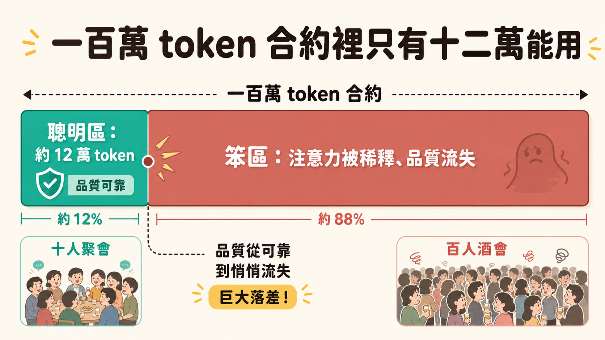
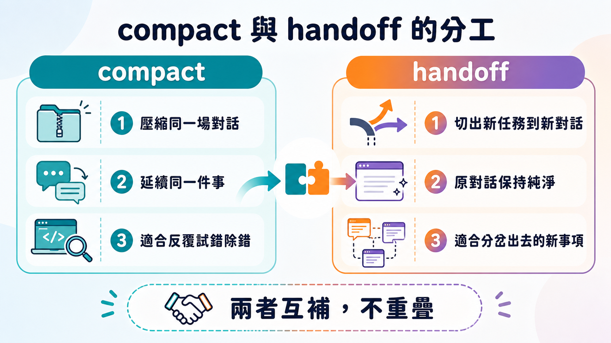

Anthropic 在廣告文案裡寫著一百萬 token 的上下文窗口，聽起來像是給了你一整座圖書館的記憶空間。但 Matt Pocock 在實際使用 Claude Code 幾個月後給出一個殘酷得多的數字：真正能指望模型維持"聰明"表現的範圍，大概只到十二萬 token 左右。過了這個門檻，對話還能繼續，回應也還會來，只是品質正在悄悄流失——他形容那是滑進了一個"笨區"。中間隔著的那七十幾萬 token 的落差，才是這篇文章真正想談的東西。
這不是危言聳聽，而是 transformer 架構本身的代價。當上下文裡的 token 數量增加，模型需要計算的注意力關係是以更快的速度膨脹的——並不是憑空多出來的容量都平白可用，而是每多一段歷史，模型分配到每個片段上的"注意力預算"就被稀釋一分。想像一場十人的聚會和一場一百人的酒會：同樣是"在場"，但你能聽清楚、記得住的對話密度完全不同。上下文窗口的後段，就是那場一百人酒會——你說的話模型都"聽見"了，但它已經沒辦法對每一句都保持同等的專注。

於是行業給出的標準解法是壓縮式的摘要，也就是大家常說的 compact。當對話逼近笨區，它會把整段歷史濃縮成一份摘要——通常包含引用過的檔案清單、你說過的關鍵語句、以及整體討論的調性——塞進新對話的開頭，讓你原地滿血復活，從笨區被拉回聰明區。做得好的話，這其實是個相當實用的機制，尤其適合那種需要在同一個問題上反覆試錯的長跑任務：試一個方案，撞牆，compact 一次留住進度，再試下一個方案。debug 的時候尤其好用。
但 Matt 發現這個工具解決的是一種問題，卻解決不了另一種問題。因為 compact 本質上只是延續同一場對話——你壓縮的是"這場對話的過去"，而不是"從這場對話裡分裂出去的一件事"。他舉的情境很具體：在做一件事的過程中，突然瞄到一個完全不相干、但遲早要處理的重構機會。這時候三個選項都不理想。硬著頭皮把新任務塞進當前對話，只會讓上下文變得稀薄，兩件事都做不好，還提早撞進笨區；直接 compact，又會把手上正在推進的進度整個抹掉重來。他真正想要的，是把"屬於這個新任務的那一小片上下文"單獨切出去，送到一個全新的、乾淨的對話裡去跑，而讓原本的對話保持"純淨"——兩條線各自獨立推進，互不干擾。
這個需求一開始是手動完成的：「把目前對話裡跟這個 bug 有關的東西整理成一份 handoff.md，我要拿去餵給另一個 agent。」重複做了太多次之後，他把這個動作寫成了一個技能，放進自己的 skills 倉庫裡的 productivity 分類下，當作一個實驗——看看自己實際上會不會頻繁用到它。結果是頻繁到讓他決定專門寫一篇影片來拆解。
這個技能本身寫得很輕：摘要目前的對話，寫成一份 markdown 交接文件，存到作業系統的暫存目錄（不是專案目錄），讓一個全新的 agent session 能接著往下做。最值得注意的用法之一，是在一種叫"grilling"的規劃階段裡使用——也就是 agent 反覆拋問題，逼你把模糊的需求想清楚的那種對話。他在替自己的軟體工廠 Sandcastle 規劃未來功能時，才問到第二題，就意識到某個關於 API 拆分的想法完全超出這次規劃的範圍，但終究要處理。於是他直接說：把這件事交接出去。這個動作立刻做了兩件事——一是讓當前這場規劃對話瞬間收斂，因為那個原本會讓後續問題複雜化的變數已經被移出討論範圍；二是生成了一份聚焦明確的文件，寫著下一場對話該做什麼、該去哪裡開 issue、大致的設計方向是什麼。原本的規劃繼續推進，那個新想法則被丟進了獨立的軌道，等著被撿起來。
另一種他強烈推薦的用法更有意思：在 grilling 的過程裡，問題天然分成兩類——一類是 agent 能直接問你、你也答得出來的"已知的未知"；另一類則是那種必須靠肉眼看、靠寫出來的原型才能判斷的東西，尤其是 UI 互動或者邏輯複雜到你自己也說不準的部分。碰到後者，與其在規劃對話裡空談，不如直接交接出去做原型。他提到的一次實例裡，規劃進行到第十三題卡住，他把"視窗通訊""某個 SDK 整合"這類難啃的部分交接出去實作，原型 session 最後跑到十六萬九千 token——遠遠超過原本那場規劃對話所能容納的空間。原型做完之後，他再把學到的東西——那些原型程式碼本身沒辦法自我說明、或者不明顯的部分——濃縮成第二份交接文件，傳回最初那場規劃對話。整場規劃因此得以順利收尾，產出了完整的 PRD 和 issue，而且裡面已經包含了原型驗證過的細節。
這個來回的形狀，其實就是一個手工搭出來的子代理系統：用一個獨立的上下文窗口去啃一件具體的事，把心得壓縮好，再遞回給發起這件事的那個"母對話"。它比原生的 sub-agent 機制多了一層自由——因為交接靠的只是一份普通的 markdown 檔案，不依賴任何特定廠商的內部機制，所以第一場對話用 Claude Code 開始，交接出去的那一場完全可以換成 Codex 或 Copilot CLI 去接手。想做那種"讓不同編碼助手互相挑錯"的對抗式審查，這個做法幾乎是最低成本的入口。
技能本身還藏著幾條看似瑣碎、實則決定文件品質的規則。第一條是在交接文件裡附上"建議技能"清單，告訴下一場對話該啟用哪些技能——比如 grill with docs、diagnose、prototype 之類。這麼做是因為他平常大量依賴技能來定義一場對話該有的"調性"，少了這個提示，下一個 agent 就得靠自己摸索該用什麼工作模式。第二條是不要重複其他地方已經寫過的內容——他發現交接文件很容易越寫越長，把 GitHub issue 或其他 markdown 檔案裡已經有的東西又抄一遍，正確做法應該是留指標，不留全文。第三條也是他反覆強調的：這些檔案必須存進系統的暫存目錄，不進專案目錄。交接文件是用完即丟的東西，不該變成程式碼庫裡越積越厚、沒人清理的文件。再來是敏感資訊的紅線——API 金鑰、密碼、個資，一律要在寫入前遮蔽掉，畢竟這些檔案的去向並不總是可控。最後一條容易被忽略但其實是整套機制成立的前提：如果使用者在下指令時帶了具體訴求，那句話就該被當成"下一場對話要聚焦在什麼"的說明，整篇文件圍繞它去寫。Matt 自己的習慣是每次交接都會口述清楚"為什麼要交接、要交接去做什麼"——他的理由很直白：少了這個前提，agent 根本無從判斷該從當前這一大堆對話裡挑出哪些東西寫進文件。
回頭看，這整套機制沒有用到任何新模型能力，靠的純粹是一份 markdown 檔案加上一點紀律。但它精準地補上了 compact 留下的空隙：compact 讓你在同一條敘事線裡走得更遠，handoff 則讓你在多條敘事線之間乾淨地切換而不互相污染。至於這種靠使用者自己手動維護的"軟體外的協調層"，會不會有一天被官方工具直接內建進去——這大概是每個花時間打磨自己工作流的人，遲早都要想一次的問題。
